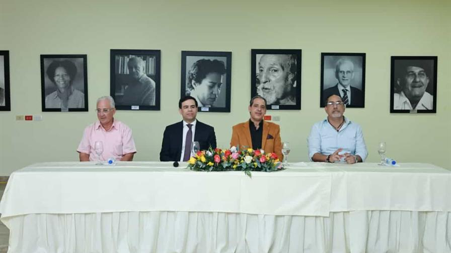
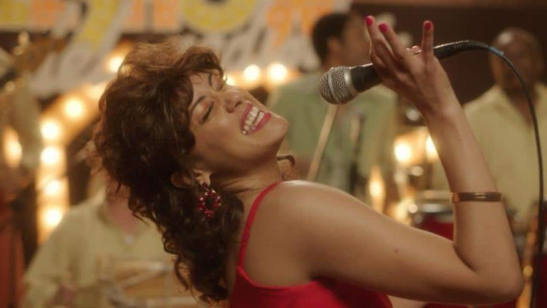

La Fundación La Oreja Media impulsa la creación de una escuela de música típica en Barahona
Publicado por Jonathan
En un ambiente cargado de emoción y sentido de comunidad, distintas entidades del sector cultural y
social hicieron realidad un proyecto largamente esperado: la creación del Programa de Formación en
Música Típica Dominicana en el Centro Cultural María Montez, en Barahona.
La iniciativa surge con el objetivo de transformar vidas mediante la enseñanza del merengue típico, una
de las expresiones más representativas de la identidad nacional.
El proyecto se materializa gracias a los fondos generados por las regalías de Resistiré RD, la versión
en merengue interpretada por más de 40 artistas dominicanos durante mayo de 2020, en plena pandemia.
En aquel momento, la iniciativa nació como un gesto de esperanza en medio de la incertidumbre sanitaria;
hoy, ese esfuerzo colectivo se traduce en oportunidades concretas para la niñez y la juventud del sur
del país.
La idea original del productor Alberto Zayas, respaldada por AZ Films Producción, La Oreja Media Group,
César Suárez Jr., Antonio González, Jompéame y el apoyo esencial de Pina Records, logró canalizar un
sentimiento nacional de solidaridad. Lo que comenzó como una respuesta artística en tiempos de crisis se
convierte ahora en un legado cultural que trasciende generaciones.
Cultura
Presidente Abinader inaugura Centro Cultural Banreservas en el antiguo Hotel Mercedes en
Santiago
Publicado por Alex
El presidente Luis Abinader inauguró este sábado el Centro Cultural Banreservas en el histórico
edificio del antiguo Hotel Mercedes, en Santiago de los Caballeros.
La obra, restaurada por el Banco de Reservas con una inversión superior a RD$340 millones, abre
sus puertas como un espacio para el arte, la formación, la creatividad y la preservación del
patrimonio cultural del Cibao.
El Hotel Mercedes, inaugurado el 9 de abril de 1929, cerró sus operaciones en 2002 tras décadas
como uno de los puntos de encuentro más emblemáticos de la vida social de Santiago.
Su arquitectura original de concreto armado, su roof garden y sus salones acogieron eventos
históricos, transmisiones radiales, graduaciones y visitas de numerosas personalidades
nacionales e internacionales.
Con la renovación dirigida por Banreservas, el edificio recupera su esencia estructural y
estética, respetando su valor patrimonial e incorporando ajustes de seguridad y tecnología
adaptados al siglo XXI.
Cultura
El Ministerio de Cultura gestiona mejorías para el Carnaval Gran Santo Domingo
Publicado por Benito

El Ministerio de Cultura llevó a cabo el Encuentro Regional de Carnaval Gran Santo Domingo,
con la finalidad de conocer las necesidades de los diferentes grupos, para así fortalecer,
organizar y proyectar con mayor rigor los carnavales del país de cara a su edición 2026, que
se llevará a cabo el domingo 15 de marzo.
La actividad se llevó a cabo en la Biblioteca Nacional, donde representantes del Carnaval de
Herrera, Santo Domingo Este, Los Alcarrizos y otros grupos, expresaron la necesidad de
recibir apoyo de las alcaldías para llevar a cabo esta manifestación cultural y la
posibilidad de internacionalizar el evento.
De igual forma, manifestaron su preocupación por aquellos que entrados a la tercera edad
quedan desamparados económicamente. Por lo que solicitaron que se establezcan pensiones.
Al hacer uso del discurso, el ministro de Cultura, Roberto Ángel Salcedo, elogió el trabajo
que ejercen. “Ustedes invierten lo más valioso que tienen: su tiempo. Lo entregan a una
actividad en la que creen, que les apasiona y que les llena el alma”, se destacó durante el
diálogo. Ese compromiso, creativo, físico y económico, es, afirman, la base sobre la cual
descansa la continuidad y el futuro de una de las expresiones culturales más emblemáticas de
la identidad dominicana.
Ofreció palabras de esperanza, destacando la buena relación que mantiene el ministerio con
las alcaldías, actores fundamentales para garantizar desfiles seguros, ordenados y de
calidad. Además, que se involucrará directamente para mejores resultados.
Cultura
"Milly, reina del merengue", será el filme inaugural del Festival de Cine Global 2026
Publicado por Juan

El Festival de Cine Global de Santo Domingo (Fcgsd) anunció que la película Milly, reina
del merengue, dirigida por Leticia Tonos, será la obra inaugural de su edición número
dieciocho, con estreno mundial el 28 de enero de 2026 en la Sala Principal del Teatro
Nacional Eduardo Brito.
En este mismo acto, el festival rendirá tributo al legado de dos de las figuras
femeninas más influyentes del arte y la cultura dominicana: Cecilia García, reconocida
por su trayectoria polifacética en teatro, cine y música; y Milly Quezada, la artista
que ha llevado el merengue dominicano a escenarios internacionales durante décadas.
Milly, reina del merengue es una película que narra la vida de Milly Quezada, quien
emigró siendo muy joven a Estados Unidos para escapar de la guerra civil dominicana.